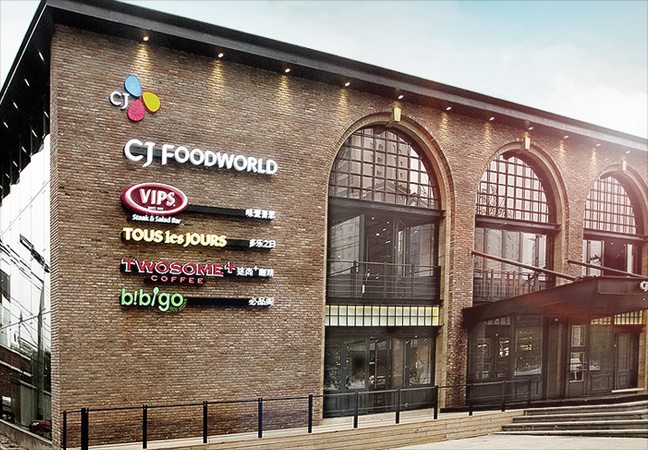
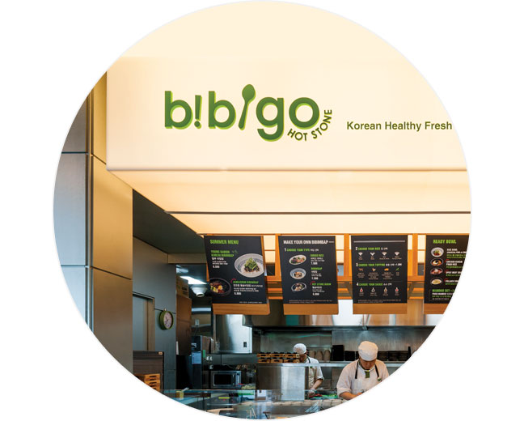
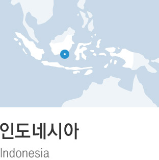

소중한 우리의 맛과 차별화 된 우리만의 식문화를
CJ푸드빌이 전세계로 알립니다.

글로벌 외식문화기업 CJ푸드빌은 2004년 뚜레쥬르가 처음으로 미국에 진출을 시작한 이후, 현재까지 비비고, 빕스, 투썸커피 등 다양한 브랜드의 총 200개가 넘는 글로벌 매장을 통해 한국의 식문화를 널리 알리고 있습니다.
특히 2010년 5월 탄생한 글로벌 한식브랜드 비비고는 현재 유럽을 비롯한 일본, 중국, 미국 등에서 한식의 우수성을 널리 알리고 한식 세계화에 앞장서고 있습니다.
-
비비고

한식의 우수성을
널리 알리다즉석에서 밥과 소스, 토핑의 종류를
선택하는 신속성과 한식의 건강함2010년 5월 탄생한 비비고(bibigo)는 한식의 우수성을 널리 알리고 한식 세계화에 앞장서며 글로벌 한식 브랜드로 성공적인 위치에 안착했습니다. 지난 2010년 8월 해외에서 가장 먼저 문을 연 베이징 1호점은 매출 30%가 테이크 아웃일 정도로 중국인들에게 비빔밥을 간편 하고 건강한 영양식으로 인지시키는데 성공했으며, 미국 LA 매장에서는 돌솥비빔밥의 선풍적인 인기와 함께 현지에서 많은 비빔밥 애호가를 만들어내는 성과를 거두었습니다.
또한, 비비고는 한식의 건강함과 밥과 소스, 토핑의 종류를 즉석에서 선택해 원하는 비빔밥을 바로 즐길 수 있는 신속성 등 장점이 부각되며 해외에서도 건강한 한식으로 인기를 얻었습니다.

미국의 인기 인터넷 매체인 허핑턴포스트가 꼽은 LA지역 최고의 건강식 패스트푸드, CBS의 LA지역 방송국인 KCAL9 뉴스가 선정한 '주목할 만한 레스토랑'으로 보도되었고, LA타임스의 비즈니스 섹션 커버스토리에는 최근 미국에 진출하는 한국브랜드의 대표 사례로도 소개되었습니다.
한식의 건강함
이와 함께 美 국영방속PBS '김치 연대기' 다큐멘터리를 통해 한국을 대표하는 비빔밥 브랜드로 소개 되었으며 중국청년보(中國靑年報)에 '과다적재된 위가 비비고에서 멈췄다' 라는 제목으로 한식의 건강함이 대서특필 되는 등 해외 언론의 스포트라이트를 꾸준히받고 있습니다.
세계 최초 한식 세계화 전문브랜드
비비고는 2012년 중국 베이징과 미국, 싱가폴에 추가 출점을 비롯해 유럽과 일본, 동남아시아 등 새로운 시장에서도 성공적으로 첫 발을 디뎠습니다. 아울러 각 지역별 매장에서 지속적 으로 현지화 작업을 거쳐 2013년 부터는 해외 현지의 외식 역량을 보유한 업체와의 제휴를 통해 조인트밴쳐(Joint Venture)나 마스터 프랜차이즈(Master Franchise) 형태로 본격적인 점포 확장을 추진할 계획입니다.
2016년까지 진출 지역을 20개 국가까지 확대할 예정이며, 가정식과 외식 경험을 아우르는 최초의 한식 세계화 전문브랜드이자 매출 2조원을 돌파하는 메가 브랜드로 키워낼 것입니다.
비비고 해외 매장 현황
- 
-
뚜레쥬르
베이커리 한류 No.1
직접 투자에 비해 리스크가 적고
브랜드의 빠른 확산이 가능한
마스터 프랜차이즈로 인한 외화획득뚜레쥬르는 2004년 미국 시장에 첫 문을 두드리며 해외 진출을 시작해 2005년 중국 베이징에 1호점을 오픈했습니다. 이어 2007년 6월에는 호치민에 베트남 1호점을 열었으며, 2011년 필리핀과 인도네시아에 잇따라 문을 열었습니다. 2012년부터 미국, 중국, 베트남, 인도네시아, 필리핀, 캄보디아, 말레이시아에서 약 90개 매장을 직가맹 형태로 운영하고 있습니다.
중국에서는 베이징 오도구에 중국 첫 매장이자 아시아 지역 첫 해외 매장을 열고, '뚜레쥬르'와 의미와 발음이 비슷한 '뚜오러즈르(多樂之日)' 라는 중국식 브랜드명으로 진출 했습니다. 뚜레쥬르는 중국중경업제품품질 보장센터(中國中品量保障中心)가 선정하는 베이커리 부문 'AAA 브랜드기업', 베이징품질협회와 베이징소비자만족도연합회가 선정하는 '고객 만족도 우수 기업'에 선정되는 등 중국 내에서 브랜드 인지도와 신뢰도를 쌓아가고 있습니다.
한마스터 프랜차이즈로 인한 외화 획득
미국, 중국과 함께 최근 뚜레쥬르가 가장 두각을 나타내고 있는 시장은 바로 동남아시아. 2007년 베트남에 직접 진출을 했으며, 필리핀과 캄보디아, 말레이시아에서는 본사가 해외에 직접 진출하는 대신 현지 기업과의 계약을 통해 브랜드 로열티 및 수수료를 받고 기술 지원 및 브랜드 사용권을 판매하는 마스터 프랜차이즈 계약을 체결했습니다.
마스터 프랜차이즈 형태로는 처음으로 2011년 11월 필리핀 마닐라에 매장을 오픈해 좋은 성과를 보이고 있습니다. 마스터 프랜차이즈는 직접 투자에 비해 리스크가 적고 브랜드의 빠른 확산이 가능하며 국내에 로열티를 벌어들이기 때문에 외화 획득에도 큰 역할을 하고 있습니다.
동남아시아 베이커리 시장 매출 1위 목표
2007년 동남아시아 지역에서 처음으로 진출한 베트남 시장에서의 성공이 동남아시아 시장의 본격적인 진출에 큰 역할을 해냈습니다. 베트남에서 뚜레쥬르의인기는 과히 '베이커리 한류'라고 일컬어질 만큼 뜨겁습니다. 뚜레쥬르는 지난 2007년 6월 베트남 1호점 오픈 이후 현재 총 30여 개의 직영 매장을 운영하고 있으며, 2010년부터 출점 가속화를 통해 베트남 시장의 No.1 베이커리에 등극하였습니다.
뚜레쥬르는 2013년 인도네시아는 물론 캄보디아, 말레이시아 진출 등 동남아 전 지역에 공격적으로 매장을 확장하며'동남아시아 베이커리 시장 매출 1위 달성'을 목표로 종합적인 전략을 적극 추진할 예정입니다.
뚜레쥬르 해외 매장 현황
-
투썸커피
Delightful Experience
본연의 맛과 향이 최상의 상태로
살아있는 딥로스팅 된 원두로 만든 커피투썸커피는 즐거운 경험(Delightful Experience)을 느낄 수 있는 컨비니언스 카페 (Convenience Cafe)로 '나만의 작은 즐거움'을 느낄 수 있는 프리미엄 디저트 카페 투썸플레이스의 패밀리 브랜드입니다.
투썸커피 로고에 있는 플러스(+)는 작은 배려로 늘 고객의 삶에 플러스(+)가 되겠다는 차별화된 컨셉트를 의미합니다.
차별화된 제품, 인테리어, 서비스
본연의 맛과 향이 최상의 상태로 살아있는 딥로스팅 된 원두로 만든 커피는 물론, 와플샌드, 솜사탕, 아포가토, 큐브슈 등 신선하고 차별화된 디저트를 즐길 수 있는 트랜디한 공간입니다. 또한 변화하는 라이프스타일에 따라 젊은 세대들이 선호하는 스타일의 차별화된 제품과 매장 인테리어, 서비스를 제공하고 있습니다.
고객이 소중히 여기는 '(즐거운) 대화', ‘(의미 있는) 참여'의 가치를 반영해 즐거운 경험을 마음껏 할 수 있는 곳, 투썸커피에 오시면 당신의 밋밋한 일상이 바뀝니다!
투썸커피 해외 매장 현황
- 빕스
-
CJ푸드월드
원스톱으로 즐기는
복합 외식 문화공간외식 뿐 아니라 식,음료에 관련한 전 제품을
보고, 사고 쿠킹 클래스까지 체험원스톱으로 즐기는 복합외식문화공간 CJ푸드월드가 2012년 중국 베이징에도 첫 발을 내디뎠습니다.
CJ푸드월드 '베이징 리두점'은 CJ푸드빌의 대표 브랜드인 뚜레쥬르와 비비고, 빕스, 투썸 커피를 한자리에서 즐길 수 있는 해외 첫 복합 외식 공간입니다.끊임없이 진화하는 CJ푸드월드
창조적이고 독창적인 토종 브랜드를 끊임없이 개발해온 CJ푸드빌의 역량이 결집된 공간인 CJ푸드월드는 베이징 리두점을 시작으로 다양한 국가로 뻗어 나가며 전 세계에서 새로운 식문화의 세계를 창조할 것입니다. CJ푸드월드는 글로벌 2호점 치안먼 점을 2014년에 오픈하였습니다.
CJ푸드월드 해외 매장 현황